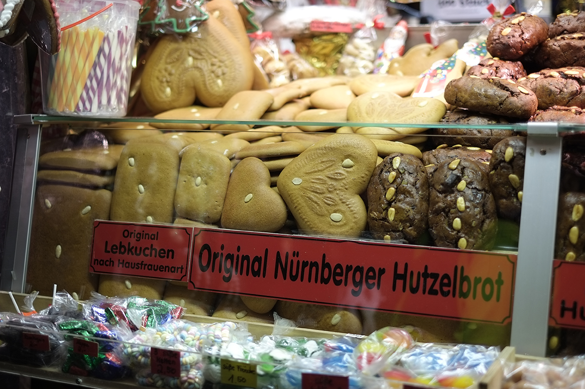
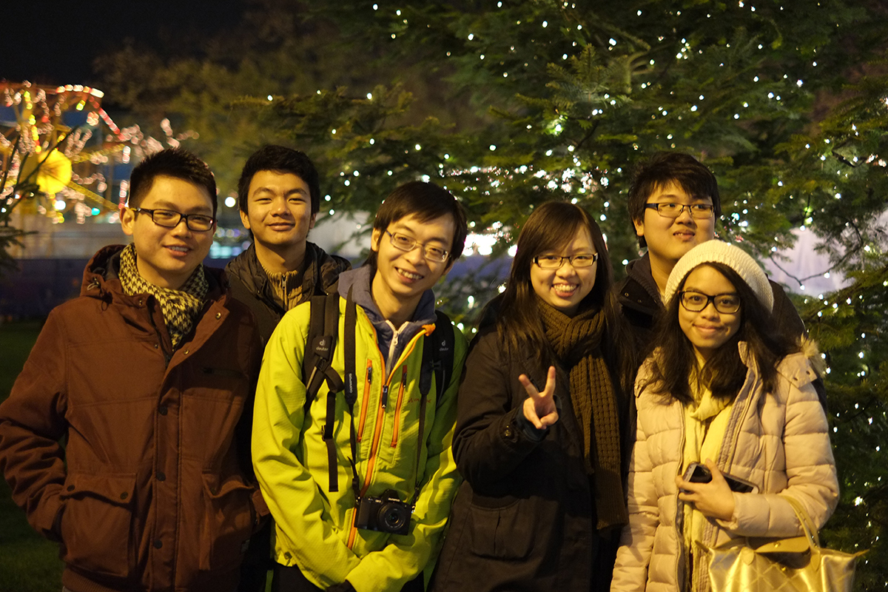

Fujifilm XE-1 f/1.4 1/220 sec ISO-200 35mm
Fujifilm XE-1 f/1.4 1/480 sec ISO-200 35mm
Fujifilm XE-1 f/1.4 1/140 sec ISO-200 35mm
Fujifilm XE-1 f/1.4 1/160 sec ISO-200 35mm
Fujifilm XE-1 f/1.4 1/450 sec ISO-200 35mm
Fujifilm XE-1 f/1.4 1/52 sec ISO-320 35mm
Fujifilm XE-1 f/1.4 1/56 sec ISO-200 35mm
Fujifilm XE-1 f/1.4 1/70 sec ISO-200 35mm
 Fujifilm XE-1 f/1.4 1/52 sec ISO-200 35mm
Fujifilm XE-1 f/1.4 1/70 sec ISO-200 35mm
 Fujifilm XE-1 f/1.4 1/52 sec ISO-2500 35mm
Fujifilm XE-1 f/1.4 1/52 sec ISO-2500 35mm Fujifilm XE-1 f/1.4 1/52 sec ISO-3200 35mm
 Fujifilm XE-1 f/1.4 1/52 sec ISO-2000 35mm